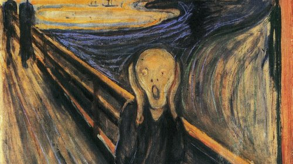

“It is six twenty ou twenty past six”. Que horas são em inglês?
1
Em inglês, “past” é usado para indicar até 29 minutos passados de uma determinada hora. A partir de trinta minutos, é usada a expressão “half past”: It is half past eight. ou It is eight thirty.
2
Como é a conjugação do verbo caber na 1.ª pessoa do singular do presente do indicativo?
2
Caber é um verbo irregular da 2ª conjugação. Apesar de estranho, “eu caibo” é a forma correta de conjugá-lo na 1ª pessoa do presente do indicativo.
3

Em 1893, o norueguês Edvard Munch criou uma série de quatro pinturas, uma delas é conhecida no mundo inteiro seu nome é _______.
Qual destas alternativas completa a frase?
3
O quadro O Grito é uma obra de arte expressionista que simboliza o sentimento de angústia do ser humano.
Esta é uma das pinturas mais populares de todos os tempos e é uma obra que revela várias características de Munch: a força expressiva das linhas, redução das formas e o valor simbólico da cor.
4
O que a palavra "legend" significa em português?
4
A palavra "legend traduzida para o português significa lenda
5
Qual o grupo em que todas as palavras foram escritas corretamente?
5
Estas palavras são exemplos de barbarismo, um vício de linguagem em que as palavras são pronunciadas ou escritas incorretamente.
6
Qual o livro mais vendido no mundo a seguir à Bíblia?
6
Dom Quixote, de Miguel de Cervantes, é um clássico da literatura espanhola. A obra foi escrita em duas partes, uma em 1605, e a outra em 1615.
7
Quais os principais autores do Barroco no Brasil?
7
Gregório de Matos, Bento Teixeira e Manuel Botelho de Oliveira.
Gregório de Mato (1633-1696), conhecido como Boca do Inferno, é o maior representante do Barroco no Brasil. Tinha esse apelido devido às críticas sociais contidas na sua poesia.
Bento Teixeira (1561-1618) é o autor do poema Prosopopeia, publicado em 1601, que é considerado o marco inicial do Barroco brasileiro.
Manuel Botelho de Oliveira (1636-1711), um dos grandes representantes do Barroco, é autor do livro Música do Parnaso, publicado em Lisboa quando o autor tinha quase 70 anos. Trata-se da sua obra com maior destaque.
?
Qual é o número da alternativa?
8
A alternativa certa era 8, você estava na oitava questão.
9
Qual a altura da rede de vôlei nos jogos masculino e feminino?
9
Oficialmente as alturas respectivas são 2,43 m e 2,24 m
10
Quem pintou "Guernica"?
10
Com 349 cm de altura por 776,5 cm de comprimento, Guernica, uma das obras mais famosas de Pablo Picasso, pintada a óleo em 1937, é uma “declaração de guerra contra a guerra e um manifesto contra a violência”.